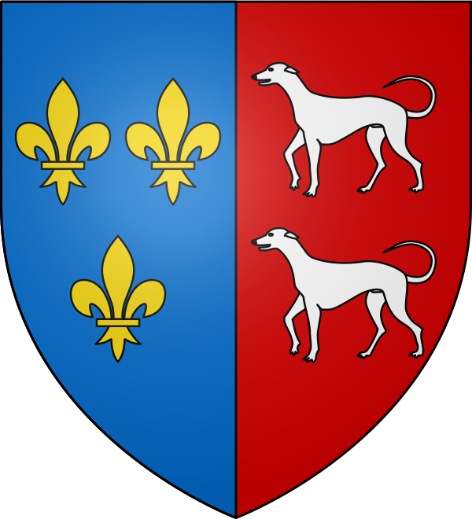

Cazères
La Porte du
Comminges


⟹ Garonne · Aquae Siccae · Fébus ⟸

Avant Cazères : les « Eaux Sèches ». Dans l'Antiquité, une agglomération gallo-romaine, le vicus d'Aquae Siccae, s'étend au lieu-dit Saint-Cizi. Les fouilles y ont mis au jour des bâtiments chauffés par hypocauste, une nécropole et une épitaphe romaine du Ier siècle, aujourd'hui conservée au musée Saint-Raymond de Toulouse.
Du sanctuaire antique au site chrétien. Au site du Bantayré, à Saint-Cizi, une nécropole et une implantation paléochrétienne prennent la suite du vicus. Le nom de saint Cizi, dont le buste reliquaire est conservé à Rieux-Volvestre, reste attaché à ce lieu.
Le promontoire de Montjoie. La ville médiévale s'installe sur le promontoire de Montjoie, bordé par la Hurride et la Garonne. Une première église y est élevée et Cazères entre dans l'histoire comme place de bord de fleuve.

Entre Comminges, Toulouse et Foix. Cazères relève successivement de la maison de Comminges puis du comté de Toulouse. Au XIVe siècle, elle passe à la maison de Foix, alors dirigée par le célèbre Gaston Fébus.
Fin du XIVe siècle : l'église Notre-Dame. À la fin du XIVe siècle débute la construction d'une nouvelle église placée sous le vocable de Notre-Dame, avec sainte Quitterie pour patronne. Elle est aujourd'hui protégée au titre des Monuments historiques.
Des armoiries royales et seigneuriales. Les armes de Cazères associent trois fleurs de lys d'or sur fond d'azur et deux lévriers d'argent sur fond de gueules, rappel des pouvoirs qui ont marqué la cité.

1842 : Saint-Cizi rejoint Cazères. En 1842, la commune de Saint-Cizi est absorbée par Cazères, réunissant la ville médiévale et le site antique.
Une ville de pont et de marché. Avec son pont sur la Garonne, sa halle et ses foires, Cazères s'affirme au XIXe siècle comme chef-lieu de canton et pôle commerçant entre plaine de Garonne et coteaux du Comminges. L'arrivée du chemin de fer renforce ce rôle.
Au rythme du fleuve. Un barrage sur la Garonne a créé un vaste plan d'eau aux portes de la ville. Depuis 2011, la commune mène un « Plan Garonne » dans le cadre du réseau Natura 2000, dont est né le Jardin Garonne, site pédagogique consacré à la faune et à la flore du fleuve.

Cazères aujourd'hui. Chef-lieu de canton et membre de la communauté de communes Cœur de Garonne, Cazères connaît une croissance démographique régulière et attire par son cadre de vie entre fleuve et Pyrénées.

Cazères est une ville de fleuve et de seuil : des thermes antiques d'Aquae Siccae à la cité de Fébus, elle garde le passage entre la plaine toulousaine et les Pyrénées.
Repère synthétique — L'Âme des RégionsPour aller plus loin — sources et documentation :
• Aquae Siccae — Pleiades (lieux antiques)
• Église de Cazères — base Mérimée (POP)
• Le Jardin Garonne — Tourisme Occitanie
• Haute-Garonne Tourisme — sites et patrimoine
• Archives départementales de la Haute-Garonne
• INSEE — Cazères
Gaston Fébus, comte de Foix, dont la maison domina Cazères au XIVe siècle, et sainte Quitterie, patronne de l'église Notre-Dame, sont les grandes figures tutélaires de la ville. Saint Cizi a donné son nom à l'ancienne commune réunie en 1842.
La vie cazérienne s'organise autour de la Garonne : promenades sur les berges, véloroute V83 entre Carbonne et Saint-Gaudens, découverte de la biodiversité au Jardin Garonne. Toute proche, Martres-Tolosane complète la visite avec sa tradition faïencière.
Accès : Cazères est desservie par les TER de la ligne Toulouse–Tarbes ; la gare est à moins de 10 minutes à pied du Jardin Garonne. Par la route, l'A64 relie la ville à Toulouse (environ 60 km) et à Saint-Gaudens.
À vélo : La véloroute V83 relie Carbonne à Saint-Gaudens en longeant la Garonne et traverse le secteur de Cazères.
Conseil de visite : associez le centre ancien, le fleuve et le site antique de Saint-Cizi ; ce sont ces trois dimensions qui expliquent l'identité de Cazères.